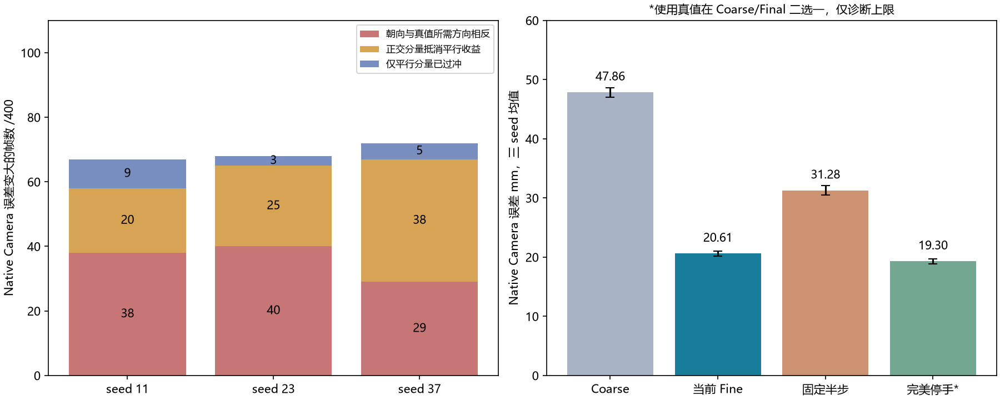
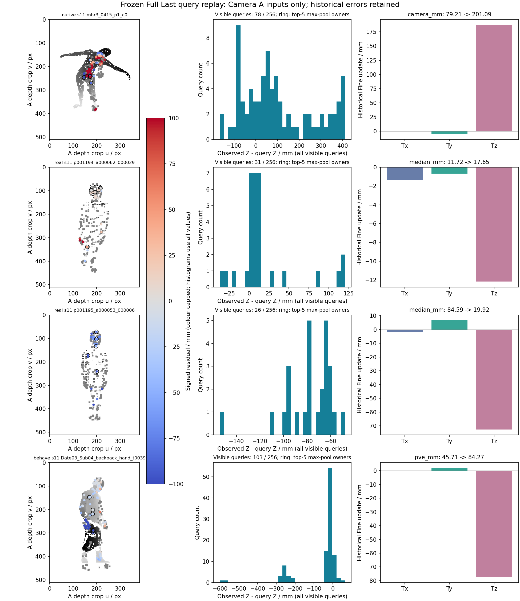

218 迁移完成：Fine 负收益诊断
1,442 个实际缓存文件、15.34 GB 已在218逐个SHA核验。原三个Full Last权重与训练源码匹配。三张2080Ti完成2,706条逐Query重放，没有训练新模型。
这次最重要的结果不能把Camera误差变大直接叫作表面坏更新。每seed的67～72个Camera负收益帧中，46～49帧的全目标mask轴向深度中位误差反而下降；其中34～41帧还同时通过共同命中误差下降、命中率与轮廓IoU不下降的检查。
Native中只有3～9帧属于平行分量本身已过冲；更多是方向相反，或正交分量抵消了Camera指标上的平行收益。使用真值在Coarse/Final中完美挑选，Camera平均仅从20.61降到19.30 mm；统一将Fine减半反而变成31.28 mm。这个Camera止损上限不能代表表面任务上的收益。
1. 在哪里运行
工作根：/raid5/xuhd/rgbd_sam3d/r5_fine_negative_update_audit_v1
Python：/raid5/xuhd/rgbd_sam3d/runtime218/env/bin/python
使用GPU 0/1/2，分别处理seed 11/23/37。原AutoDL仍保留、仍为无卡模式，两个服务器都未关闭。
环境为Python3.10、PyTorch2.5.1+cu118、原nvdiffrast0.4.0源码。与AutoDL的软件版本不同，已通过解析相机Z渲染QA和固定11条样本数值核验。全部数据走直连SFTP或复用218已核验备份，没有经过FlClash。
2. 坏更新到底是哪一种
| seed | 方向相反 | 正交分量抵消收益 | 平行分量本身过冲 | 合计坏帧 /400 |
|---|
| 11 | 38 | 20 | 9 | 67 |
| 23 | 40 | 25 | 3 | 68 |
| 37 | 29 | 38 | 5 | 72 |
只在有原生Camera真值的Native上作这个几何分解。恒等式为 ΔE²=||δ||²−2δ·(t_GT−t_coarse)，1,200条全部满足。它说明误差如何组成，不证明网络为什么产生该向量。真实HuMMan/BEHAVE没有相同Camera真值，不套用这些标签。

“完美停手”使用真值逐帧选Coarse和Final较好者，只是保留这两个固定输出时的诊断上限，不是可部署方法，不是全局最优定位上限。三seed反复出现坏更新的Native帧只有19/400；HuMMan VAL没有一帧三seed都变差。因此不能把17%理解成一个固定不变的失败人群。
3. Camera变差，表面一定变差吗？
| seed | Camera变差帧 | 其中full-mask深度median改善 | 其中full-mask/共同命中median都改善 | 再要求命中率与IoU都不下降 |
|---|
| 11 | 67 | 46 | 40 | 34 |
| 23 | 68 | 49 | 43 | 40 |
| 37 | 72 | 48 | 45 | 41 |
答案是否定的。这是用同一批400张Native合成VAL、真实K与clean GT深度补算的可见表面诊断。它支持“两个目标可能给出不同方向的判断”，不证明某个人体参数一定更准，也不是俯卧后背或穴位精度。
| seed | 阶段 | full-mask median mm | 共同命中median mm | 共同命中P95 mm | 命中率 | IoU | full-mask P95 mm* |
|---|
| 11 | coarse | 95.33 | 58.73 | 190.46 | 83.18% | 0.7571 | 4074.84 |
| 11 | final | 76.60 | 39.99 | 173.22 | 84.13% | 0.7716 | 4033.66 |
| 23 | coarse | 96.75 | 59.78 | 191.98 | 83.10% | 0.7581 | 4071.62 |
| 23 | final | 76.39 | 39.97 | 172.52 | 84.28% | 0.7743 | 4015.56 |
| 37 | coarse | 96.14 | 59.30 | 190.79 | 83.02% | 0.7549 | 4082.66 |
| 37 | final | 77.05 | 40.09 | 175.35 | 83.83% | 0.7669 | 4021.32 |
先逐帧计算，再在固定400帧取均值；不同seed分别报告。两个方法使用同一GT mask和同一共同命中点集。*未命中像素仍以零渲染深度计入full-mask，因此full-mask P95含数米量级的漏覆盖惩罚，不能当作命中表面的毫米误差。共同命中误差必须连同命中率/IoU阅读。此为新增诊断，不替换旧主分数，完整逐帧值保留在JSON。
4. Query残差是否支持“异常点带偏”
| 数据 | seed | 可分析帧 /全部 | |Z残差|中位 mm：坏 /未坏 | Z残差标准差 mm：坏 /未坏 | 局部深度范围 mm：坏 /未坏 |
|---|
| native | 11 | 400/400 | 61.21 / 61.76 | 78.10 / 90.12 | 24.00 / 23.00 |
| native | 23 | 400/400 | 61.71 / 62.30 | 94.99 / 88.34 | 24.00 / 23.00 |
| native | 37 | 400/400 | 61.21 / 62.38 | 84.47 / 91.16 | 24.00 / 23.00 |
| real VAL | 11 | 40/40 | 10.26 / 25.71 | 36.87 / 34.70 | 10.61 / 10.66 |
| real VAL | 23 | 40/40 | 12.96 / 45.51 | 32.25 / 34.95 | 8.54 / 8.85 |
| real VAL | 37 | 40/40 | 14.96 / 52.60 | 40.44 / 29.86 | 7.37 / 11.46 |
| behave | 11 | 270/270 | 24.30 / 44.59 | 53.81 / 55.48 | 18.00 / 18.00 |
| behave | 23 | 269/270 | 23.59 / 44.40 | 57.55 / 50.63 | 18.00 / 18.00 |
| behave | 37 | 270/270 | 22.91 / 51.87 | 54.99 / 53.16 | 18.00 / 18.00 |
这是Query输入残差的组统计，不是最终Camera误差、独立B表面距离或穴位误差。先逐帧计算Query特征，再分别取坏帧/未坏帧的中位数。
HuMMan VAL的坏更新组通常已经只有约10～15mm的Query轴向残差；改善组约26～53mm。BEHAVE也有类似分离。Native两组却都约61～62mm：即使Camera参数已接近真值，冻结身体的表面残差仍可能较大。
Query残差方差、局部5×5深度跳变和max-pool通道集中度没有出现统一、跨域稳定的“坏帧更极端”规律。现有证据不足以把少数飞点、物体遮挡或衣褶认定为共同主因；我们也没有相应逐点语义真值。
5. 看实际输入与位移

左：真实Camera A裁剪深度，彩色点是模型实际采用的可见Query，灰叉为未采用Query，黑圈为贡献max-pool通道最多的五点；中：全部可见Query的轴向残差；右：历史Fine的Tx/Ty/Tz。例子按旧误差的最大负收益和预先已知的p001195选取，不按新Query特征挑图。颜色饱和范围±100mm，直方图与数值不截断。
6. 重放差异如何处理
原样Camera头重放在少数边界帧出现微小Coarse差异改变离散可见Query的问题。为恢复原Fine上下文，本轮固定历史Coarse中间值，再通过原Fine权重与原渲染器观察实际输入；没有将这个诊断条件当新模型，也没有替换原始主结果。
2,706条坐标数值重放均通过0.0001m标准；2,705条同时通过Query计数与法线特征值核验。唯一单列帧为seed 23 / Date03_Sub03_tablesmall_move_t0025.000，可见Query 44 vs历史43，位置最大差异0.0828mm。该帧仍保留在原误差和分类统计，只不进入主要Query关联统计。原逐点mask没有保存，不能用计数匹配冒充独立的历史逐点身份核验。
7. 下一步的取舍
先不启动R5.1训练。这轮没有支持一个统一的“方差大就关闭”门控，也不应按Camera标签把所有负收益更新截掉。更值得验证的是：固定身体时，Camera参数监督与可见表面监督如何分别影响Fine，以及小残差起点是否需要更有针对性的校准。门控只作为独立对照，不能依靠Camera B选阈值后再称独立验证。
完整RGB-D→Mesh端到端耗时仍未测：这次使用已缓存的Official Body/Backbone，不能拿本轮重放速度或44MB级Torch张量内存当作完整SAM3D系统的速度/显存。
完整Query统计与字段 · 全部2,706条分类 · 1,200条Camera/表面对照 · 全部重放差异